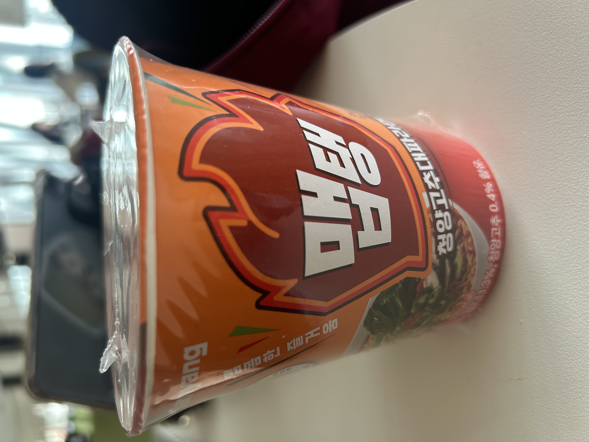
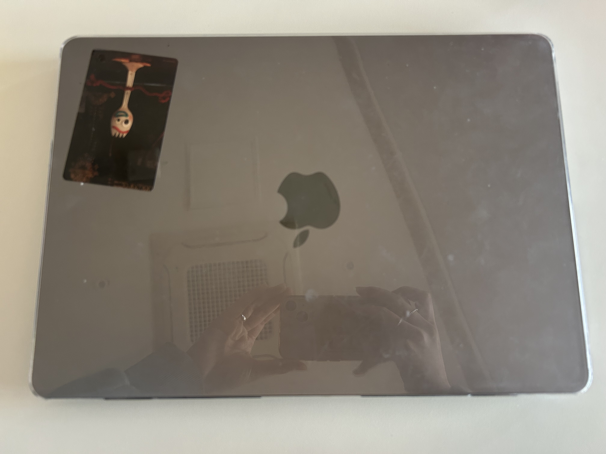
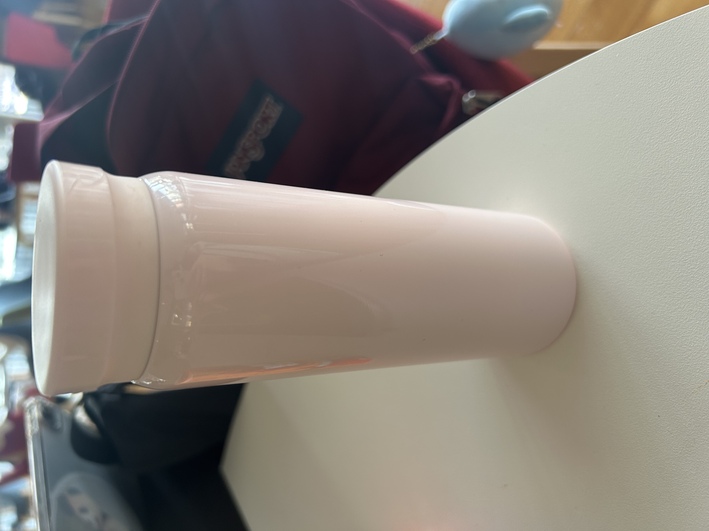

롯데자이언츠라는 팀을 좋아하고 그중에서도 윤동희 선수를 가장 좋아합니다
야구라는 스포츠를 남자친구를 통해 좋아하게 되어 직관을 다니던 중에 운명처럼 응원가와
팀과 선수에 끌리게 되어 롯데 자이언츠의 팬이 되었습니다. 사는동안 우승하길!
초등학교 때 가족들을 만나러 미국에 갔었는데 그 때 먹었던 쌀국수 맛을 잊을 수가 없습니다
우리나라 어디에서도 그 맛을 찾을수가 없고 그 뒤로 외국음식의 매력에 빠져 향신료와 이국적인
음식을 좋아하게 되었습니다!


제 단짝친구의 남자친구(일본인)가 선물해줬어요! 너무 귀여워요
어제 집에 들어가는 길에 1+1이길래 샀어요
다들 드셔보셨나요? 세가지 맛이 있어요 : 후추소고기, 청양대파, 조개
개강 직전에 새롭게 장만한 보조배터리입니다 너무 귀여워요
약 2년전에 장만한 제 노트북입니다. 소중하게 여기고 있어요
통학생의 필수템 텀블러입니다
여기에 물도 마시고 커피도 마시고 유용합니다

저는 텐퍼센트 커피에서 9개월째 일을 하고 있습니다!
얼음 가득+우유 160g+밀크티 베이스 40g+ 2샷
요거트 50g+우유 120+얼음 가득+요거트 파우더 60g+ 한라봉B 50g
얼음 가득+우유 90g+리얼초코B 120g+말차B 35g